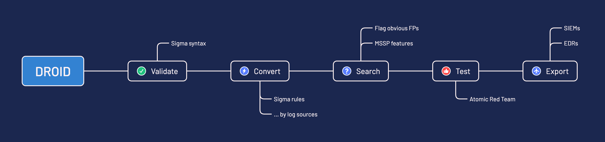

droid documentation
droid is a PySigma wrapper allowing an easy adoption of Sigma and helps enabling Detection-As-Code. The ultimate goal of droid is to consume a repository Sigma rules and deploy them on one or multiple platform (SIEM/EDR).
The tool also supports native SIEM/EDR search queries.

-
Set up in few minutes
Install
detect-droidwithpipand get up and running in minutes -
Enable automation
Enable detection content versioning and take advantage of Sigma at scale
-
Made to measure
Standardise the detection rules on your platforms, change the rules settings and more with few lines
-
Open Source, EUPL
droid is licensed under the EUPL and available on GitHub
Features
Key features are:
- Validate the syntax of Sigma rules
- Convert them by applying a set of transforms per log source and platform
- Search in logs and report on findings
- Test the rules by leveraging Atomic Red Team™ (work in progress)
- Deploy them with any compatible SIEM and EDR
Supported SIEM/EDR
Info
See the list of supported platforms (SIEM/EDR) here.